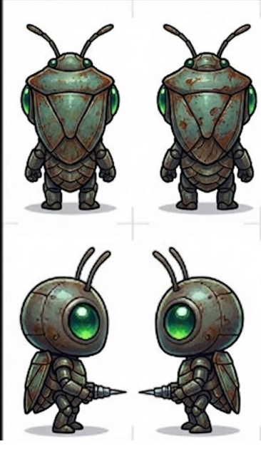

??? Taxón: Chinches de Cama
La Aristocracia Parasitaria. Se creen realeza porque duermen en camas humanas. Elitistas hasta la médula, solo beben sangre premium de humanos dormidos. Si no es de hilo egipcio de 1000 hilos, no les interesa.
Ficha del Taxón
?? El Legado del Progenitor (NeoPlaga — Año 20.000)
El Emperador de las Sábanas
"Gobernaba desde los lechos de los Gigantes. Bebía su sangre mientras dormían sin que jamás lo supieran. El parásito perfecto. El gobernante invisible. Nosotros heredamos su trono — aunque las sábanas ahora están congeladas."
Los Chinches del 20.000 buscan obsesivamente "camas" — cualquier superficie blanda y cálida donde un humano haya dormido alguna vez. Las tratan como reliquias sagradas.
Espécimen Alfa: Cimex el Aristócrata
El primer chinche que decidió que no toda sangre era igual. Cimex probó la sangre de un humano dormido en sábanas de seda y declaró que todo lo demás era "inaceptable para su paladar". Fundó una dinastía basada en el esnobismo alimenticio.
"Cimex se autoproclamó aristócrata porque duerme en colchones ajenos. He visto extinciones masivas construirse sobre pretextos menos ridículos, pero no muchas. Al menos los faraones construían pirámides. Cimex construyó... una lista de exigencias."
— Ramazzottius, el Tardígrado
Recurso: Sangre Premium
Los Chinches solo pueden alimentarse de sangre de humanos dormidos en camas. No sirve sangre de animales, ni de humanos despiertos, ni sangre almacenada. Debe ser fresca, nocturna y de un huésped horizontal.
?? Mecánica de Caza
Solo pueden cazar en El Barrio Alto y zonas con camas humanas activas (durante ciclo nocturno). Su recurso es de alta calidad pero extremadamente limitado en ubicación y horario. Fuera de su zona, pasan hambre con dignidad.
Defecto Genético: Paladar Fino
Los Chinches tienen un sistema digestivo aristocráticamente inútil. Su cuerpo rechaza violentamente cualquier sustancia que no cumpla sus estándares imposibles.
?? Efecto Mecánico
- No pueden consumir items comunes — pociones básicas, comida estándar, recursos de tier bajo
- Si intentan consumir algo "indigno", vomitan y pierden el turno
- Solo pueden usar consumibles de tier Raro o superior
Rol en la Sociedad
Los Chinches son los políticos y administradores del mundo insecto. Su obsesión con la jerarquía los hace naturales para:
- Liderar La Colmena (burocracia, leyes, orden social)
- Controlar el comercio de recursos premium
- Diplomacia entre facciones (cuando les conviene)
Gobiernan no porque sean los más fuertes, sino porque convencieron a todos de que merecen gobernar. Y nadie ha tenido la energía de discutirles.
Estereotipo y Parodia
Son elitistas insoportables que se creen realeza porque duermen en camas humanas. Hablan de "linaje" y "pureza de sangre" sin un gramo de ironía. Desprecian a cualquier Taxón que se alimente de algo que no sea sangre humana premium. Su mayor insulto es "plebeyo".
"Los Chinches me recuerdan a ciertos microorganismos que conocí en el Precámbrico: convencidos de su superioridad, incapaces de sobrevivir fuera de su nicho exacto. La diferencia es que aquellos al menos tenían la decencia de extinguirse en silencio."
— Ramazzottius, el Tardígrado
NPC Notable: Cimex "El Patrón"
El Patrón — Reina del Gran Charco
Reside en un pliegue de sábana de algodón egipcio (o eso dice ella — es poliéster). Su corte es un ejército de chinches menores que le abanican con pelusa. Te hablará sin mirarte. Si quieres algo de ella, primero deberás demostrar que eres "digno de su tiempo". Spoiler: nunca lo eres.
??? Perspectiva del Linaje
Lo que Chinches opina de los demás
| Taxón | Opinión |
|---|---|
| ?? Zancudos | "Técnicos competentes. Útiles como empleados. Jamás como iguales." |
| ?? Cucarachas | "La plebe. Necesarias para el funcionamiento del sistema, pero que no se sienten a nuestra mesa." |
| ?? Avispas | "Matones sin modales. Útiles como guardaespaldas si logras que dejen de gritar." |
| ??? Garrapatas | "Campesinos. Lentos, sucios, pero resistentes. Alguien tiene que hacer el trabajo de campo." |
| ?? Mariposas | "Adornos vacíos. Bonitas para decorar una corte, inútiles para gobernar una." |
| ??? Arañas | "Intelectuales útiles. Les damos trabajo y ellas nos dan resultados. Relación perfecta." |
| ?? Escorpiones | "Soldados aceptables. Obedecen bien en la oscuridad. Lástima lo de la luz." |
| ??? Vinchucas | "Herramientas de precisión. Caras, pero efectivas. No preguntes cómo trabajan." |
| ?? Moscas | "Suciedad organizada. Que se queden en sus basureros y no contaminen nuestros dominios." |
| ?? Sanguijuelas | "Vendedores ambulantes con delirios. Útiles para conseguir sustancias, nada más." |
| ?? Polillas | "Dementes. Impredecibles. Peligrosas porque no puedes comprarlas ni amenazarlas." |
| ? Pulgas | "Ladrones sin clase. Si tuvieran modales, podrían ser mensajeros aceptables." |
| ?? Sembradores | "Arruinan la estética de nuestras ruinas con su vegetación rastrera. Es una invasión de maleza no autorizada que debe ser podada inmediatamente." |
| ?? Típulas | "Excelentes guardaespaldas decorativos. Las contratamos para eventos. Nadie necesita saber que no pueden pelear. La imagen es todo." |
?? Bosquejo
Concept Art — Estilo Polly Pocket Tóxico
